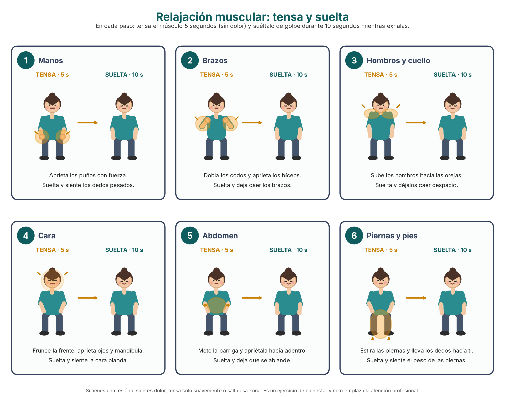
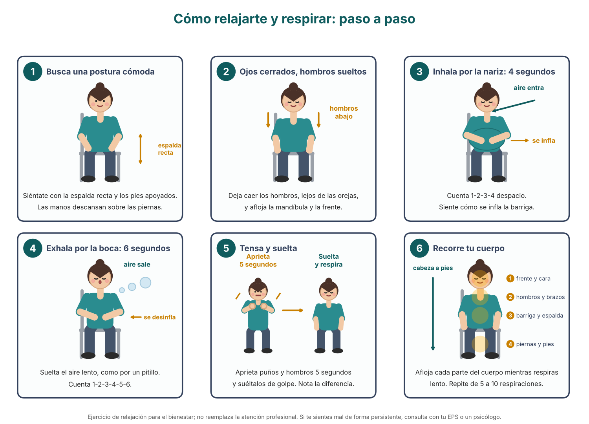
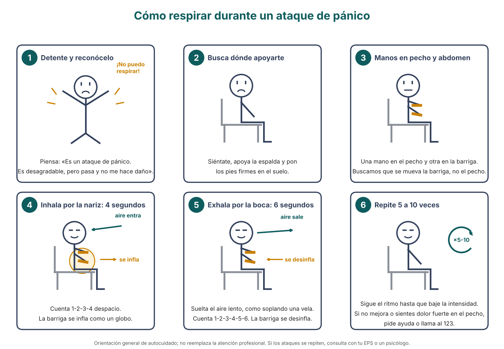
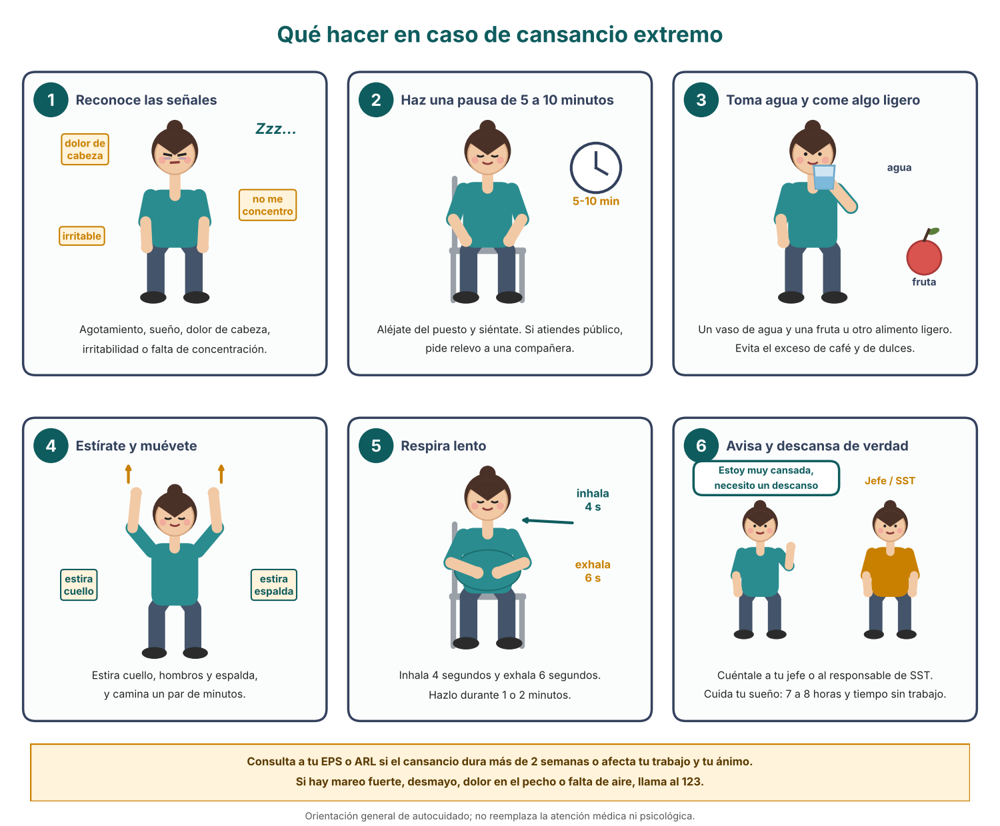

Marco Normativo y Documentos Descargables
Consulta y descarga las guías oficiales vigentes en Colombia sobre riesgo psicosocial, acoso laboral, salud mental y desconexión.
Guía: Acoso Laboral en Colombia
De la Ley 1010 de 2006 a la Reforma Laboral y el Decreto 1040.
Descargar PDFCompendio de Salud Mental
Leyes marco, decretos laborales y resoluciones de riesgo psicosocial (vigente).
Descargar PDFResumen Riesgo Psicosocial
Resoluciones 2764 de 2022 y 2646 de 2008, periodicidad y perfil profesional.
Descargar PDFGuía Rápida: Salud Mental
Decreto 729 de 2025 (Política Nacional) y leyes complementarias.
Descargar PDFPrevención de Acoso y Violencia
Modalidades, canales de reporte, Ley 2365 de 2024 y Convenio 190 de la OIT.
Descargar PDFCódigo de Conducta Laboral
Estructura obligatoria, comités de convivencia y compromisos de líderes.
Descargar PDFDerecho de Desconexión Laboral
Lineamientos de la Ley 2191 de 2022 y Sentencia C-331 de 2023.
Descargar PDFEstrés y Crisis Emocionales
Protocolos de intervención, vigilancia epidemiológica y primeros auxilios.
Descargar PDFFormato de Asistencia a Capacitaciones
Control oficial de asistencia, firmas y registro de horas para capacitaciones (PS-SST-01).
Descargar PDFEncuesta Anónima de Riesgo Psicosocial
Por favor responde con total sinceridad. Selecciona una opción para cada pregunta.
Divulgación y Pausas Activas Interactivas
Cápsulas audiovisuales y guías visuales paso a paso para el autocuidado y la salud mental.
Guías Visuales de Autocuidado (Haz clic para ampliar)
Relajación Muscular (Tensa y Suelta)
Técnica de 6 pasos para liberar tensión física en manos, brazos, cuello y cuerpo.

Cómo Relajarte y Respirar Paso a Paso
Ejercicios de postura, respiración abdominal y escaneo corporal.

Protocolo ante Ataques de Pánico
Pasos de emergencia para recuperar el control de la respiración y la calma.

Qué Hacer en Caso de Cansancio Extremo
Pautas breves de recuperación, hidratación y comunicación con líderes.
